UT. 7 - Dockers y Cloud Formation
Resultados de aprendizaje y criterios de evaluacion que se evaluarán en esta unidad.
| Resultados de aprendizaje de la unidad didáctica: |
|---|
| RA. 4: Gestiona servicios de almacenamiento y bases de datos en la nube, seleccionando tecnologías adecuadas para casos específicos, y diseña arquitecturas escalables y resilientes utilizando herramientas de monitoreo y optimización para mejorar el rendimiento. |
| Criterios de evaluación de la unidad didáctica: |
|---|
| d) Se ha diseñado arquitecturas escalables y resilientes basadas en las mejores prácticas. |
| e) Se ha hecho uso de herramientas de monitoreo y recomendaciones de optimización. |
1 - Docker
1.1 - Introducción
Docker es una plataforma que permite crear, empaquetar y ejecutar aplicaciones dentro de contenedores.
Un contenedor es un entorno aislado que contiene todo lo necesario para ejecutar una aplicación: código, librerías, configuraciones y dependencias.
1.2 - ¿Cómo Funciona Docker?
Docker funciona mediante imágenes, contenedores y mecanismos de aislamiento a nivel de sistema operativo gestionados por el motor de ejecución Docker engine.
1.3 - Conceptos clave de docker
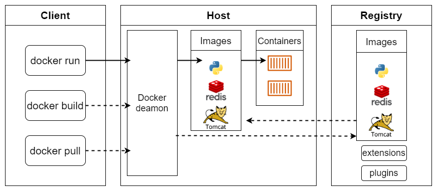
-
Docker Engine
Docker Engine es el motor de contenedores de Docker. Utiliza funciones del sistema operativo (especialmente del kernel de Linux) para crear entornos aislados llamados contenedores.-
Docker Engine está compuesto por:
- Docker Daemon (dockerd)
- Docker CLI
- API REST de Docker
-
Sus funciones principales son:
- Construir imágenes
- Ejecutar y supervisar contenedores
- Gestionar redes, volúmenes y almacenamiento
- Descargar imágenes desde registros (Docker Hub, AWS ECR, etc.)
-
-
Imagen:
- La imagen es una plantilla de solo lectura que se utiliza para crear contenedores. A partir de una imagen pueden crearse múltiples contenedores.
- Las imágenes, además de tener su sistema de ficheros predefinido, tienen una serie de parámetros predefinidos (comandos, de variables de entorno, etc.) con valores por defecto y que se pueden personalizar en el momento de crear el contenedor.
- Docker Engine permite crear nuevas imágenes basándose en imágenes existentes, normalmente mediante un Dockerfile.
- Una imagen está formada por capas (layers). Al construir una nueva imagen, Docker reutiliza las capas de la imagen original y añade únicamente las capas modificadas.
-
Contenedor (container):
Un contenedor es un paquete ejecutable independiente que incluye todo lo necesario para ejecutar una aplicación: código, tiempo de ejecución, herramientas del sistema, librerías y configuración. Los contenedores comparten el kernel del sistema anfitrión, lo que los hace ligeros y eficientes.- Son instancias ejecutables de una imagen.
- Pueden ser creados, arrancados, detenidos, reiniciados y eliminados.
- Cada contenedor Docker posee un identificador único (ID) de 64 caracteres (normalmente se utiliza la versión corta de 12 caracteres).
- Los comandos de Docker aceptan tanto el ID completo como el reducido.
- Es posible referirse a un contenedor usando solo los primeros caracteres de su ID, siempre que dicho prefijo sea único.
-
Dockerfile:
Un Dockerfile es un archivo de texto que contiene instrucciones para construir una imagen Docker, incluyendo la imagen base, los paquetes necesarios y la configuración del entorno.
-
Registro (registry):
Las imágenes Docker se almacenan en registros, que actúan como repositorios de imágenes de contenedores. Docker Hub es el registro público más conocido, aunque las organizaciones suelen emplear registros privados como AWS ECR.
-
Contenerización:
El proceso de empaquetar una aplicación y todas sus dependencias en un contenedor se conoce como contenerización. Gracias a ello, los contenedores pueden ejecutarse de forma uniforme en cualquier sistema que disponga de Docker.
1.4 - Kubernetes
Kubernetes es un sistema que gestiona clusters de servidores y se encarga de ejecutar contenedores (normalmente Docker o cualquier imagen compatible con el estándar OCI) de forma:
- Distribuida
- Resiliente
- Escalable
- Automatizada
Fue desarrollado por Google basándose en más de 10 años de experiencia gestionando contenedores internamente (Borg), y actualmente lo mantiene la Cloud Native Computing Foundation (CNCF).
1.4.1 - ¿Para qué sirve Kubernetes?
Kubernetes ayuda a:
- Ejecutar aplicaciones distribuidas en muchos contenedores.
- Escalar de forma automática cuando aumenta la carga.
- Reiniciar contenedores si fallan.
- Distribuir la carga entre múltiples nodos.
- Actualizar versiones de la aplicación sin interrupciones (rolling updates).
- Programar contenedores en nodos disponibles.
- Gestionar redes y almacenamiento persistente para contenedores.
Es decir, permite ejecutar aplicaciones complejas en producción sin preocuparte de la infraestructura paso a paso.
1.4.2 - Conceptos básicos de Kubernetes
Lista de los recursos más importantes dentro de un cluster:
-
Nodo (Node)
Máquina física o virtual donde Kubernetes ejecuta contenedores.
Puede ser:- Master node → gestiona el cluster
- Worker node → ejecuta las aplicaciones
-
Pod
Es la unidad mínima en Kubernetes.
Un Pod puede contener uno o varios contenedores que funcionan como una unidad. -
Deployment
Define:- Cuántos Pods se necesitan
- cómo se actualizan
- cómo se mantienen en ejecución
- Kubernetes garantiza que el estado deseado coincida con el estado real.
-
Service
- Abstracción de red:
- Permite que los Pods sean accesibles dentro o fuera del cluster.
Tipos comunes:
- ClusterIP (interno)
- NodePort
-
LoadBalancer (externo, usado en nubes como AWS)
-
Namespace Sirve para organizar recursos dentro del cluster (útil en empresas con varios equipos/proyectos).
-
Volúmenes (Volumes) Permiten persistir datos incluso cuando los Pods mueren y se recrean.
2 - ¿Cómo desplegar contenedores en AWS?
AWS proporciona varias herramientas para trabajar con contenedores que permiten: - Almacenar imágenes de contenedores. - Orquestar y escalar aplicaciones. - Ejecutar contenedores con o sin gestión directa de servidores, según el servicio utilizado.
En el caso de Amazon ECS (Elastic Container Service), el proceso general de despliegue es el siguiente:
Pasos generales para desplegar un contenedor en AWS (ECS)
- Crear la imagen del contenedor (Dockerfile y build de la imagen).
- Subir la imagen a un repositorio de AWS (Amazon ECR).
- Definir la Task Definition, donde se especifica cómo debe ejecutarse el contenedor (imagen, CPU, memoria, puertos, variables de entorno, etc.).
- Preparar la infraestructura de red (VPC, subredes y grupos de seguridad), si no se utiliza la VPC por defecto.
- Crear un clúster ECS, que actúa como contenedor lógico de los recursos de ejecución.
- Crear un servicio ECS, encargado de lanzar y mantener las tareas en ejecución, así como de su escalado y disponibilidad.
2.1 - Amazon ECR (Elastic Container Registry)
Amazon ECR es un registro de contenedores donde almacenar las imágenes Docker.
Funciones principales:
- Almacenar imágenes Docker a nivel empresarial.
- Integración nativa con ECS, EKS, Lambda y CodePipeline.
- Control de acceso mediante IAM.
- Alta disponibilidad y cifrado en reposo.
ECR es el punto de partida para desplegar contenedores en AWS, ya que las imágenes deben estar accesibles desde los servicios que las ejecutan.
2.2 - Amazon ECS (Elastic Container Service)
Amazon ECS es la plataforma de orquestación de contenedores de AWS. Permite ejecutar contenedores Docker en dos modos: EC2 y Fargate.
2.2.1 - ECS sobre EC2
- Los contenedores se ejecutan en instancias EC2 administradas (parcial o totalmente) por el usuario.
- El usuario decide el tamaño, tipo y cantidad de máquinas.
- Dependiendo de la opción elegida, puede requerir aplicar parches, gestionar capacidad y asegurar servidores.
2.2.2 - ECS con Fargate
- Es un servicio serverless: no requiere gestionar máquinas.
- Ejecuta contenedores sin preocuparte por servidores ni escalado.
- Pago por uso de cada contenedor.
- Ideal para aplicaciones basadas en microservicios o arquitecturas distribuidas.
2.3 - Amazon EKS (Elastic Kubernetes Service)
Amazon EKS permite desplegar contenedores utilizando Kubernetes, el estándar de orquestación más extendido.
- AWS gestiona el control plane.
- El usuario gestiona los nodos (EC2) o Fargate como backend.
- Total compatibilidad con imágenes Docker o de cualquier estándar OCI.
- Es ideal si se necesita mantener compatibilidad con Kubernetes o en un entorno multi-cloud.
2.4 - AWS Lambda
AWS Lambda permite empaquetar funciones en imágenes Docker de hasta 10 GB.
Esto ofrece ventajas como:
- Usar dependencias complejas no soportadas en Lambda tradicional.
- Migrar aplicaciones que ya se ejecutan en contenedores.
- Unificar pipelines de CI/CD basados en Docker.
- Lambda ejecuta el contenedor como una función serverless, sin servidores.
2.5 - AWS App Runner
AWS App Runner es un servicio de alto nivel para desplegar aplicaciones web y APIs directamente desde:
- Un repositorio de código
- Una imagen Docker en ECR
Es ideal para desarrolladores que quieren centrarse en el código y dejar toda la infraestructura a AWS.
3 - ECR
Cuando se desarrollan aplicaciones con Docker, resulta imprescindible disponer de un repositorio adecuado para almacenar las imágenes generadas. Docker Hub resulta ser una opción idónea para la distribución de imágenes públicas pero, el código propietario requiere un entorno privado, seguro y con alta disponibilidad. Para este último caso, AWS propone Amazon Elastic Container Registry (ECR).
ECR es el servicio de registro de contenedores Docker totalmente gestionado por AWS, diseñado para integrarse con otros servicios, como ECS, EKS y Fargate. Este servicio asume la gestión de funciones esenciales, entre ellas el análisis de vulnerabilidades, el control de acceso, el cifrado y la aplicación de políticas de ciclo de vida, todo ello accesible a través de una API.
3.1 - Creación de un repositorio privado ECR
3.1.1 - Acceder a ECR
Primero accederemos al servicio tecleando ECR en la barra de búsqueda.
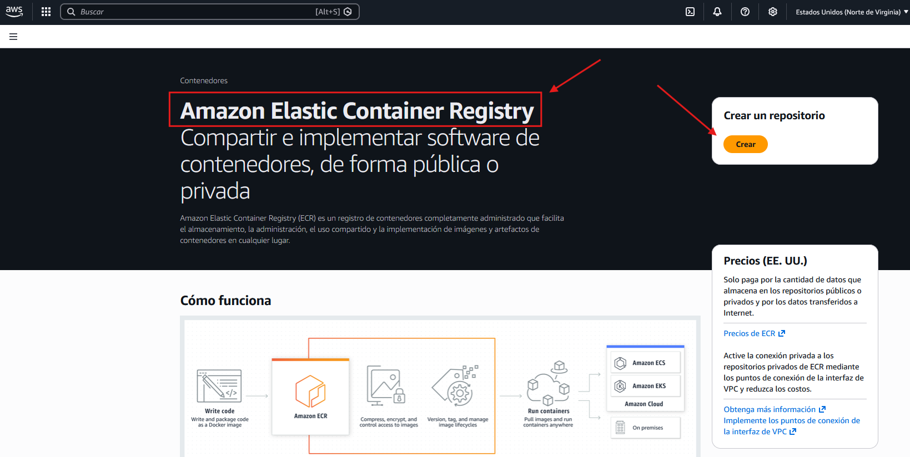
3.1.2 - Crear repositorio
Creamos nuestro repositorio privado. Indicamos la ruta y en configuración de las etiquetas de imagen seleccionamos immutable.
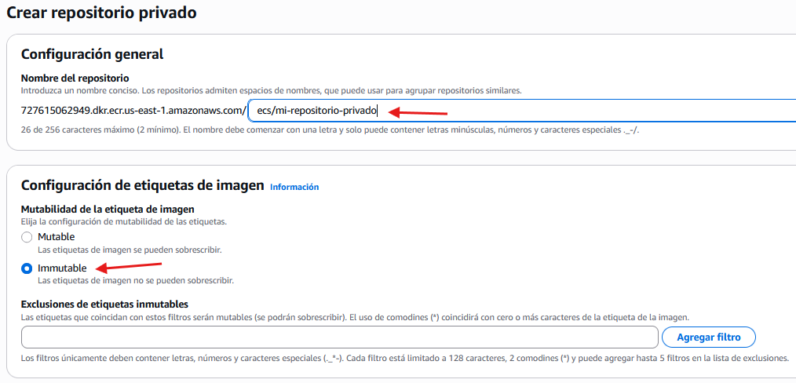
Motivos por los cuales se recomienda seleccionar immutable:
-
Evita sobrescrituras accidentales o malintencionadas:
Una vez publicada una imagen con una etiqueta (v1.0.0, latest...), ya no puede ser reemplazada por otra imagen posterior. -
Garantiza la trazabilidad de versiones
La inmutabilidad asegura que cada etiqueta corresponde siempre a la misma imagen. -
Mejora la seguridad y aporta estabilidad a los despliegues Si las etiquetas cambian su contenido, se pueden generar despliegues impredecibles. La inmutabilidad contribuye a que cada despliegue sea reproducible y consistente.
3.1.3 - Descargar una imagen
Para el caso, descargaremos el servidor web nginx.
Desde la CLI de AWS hacemos pull sobre la imagen de nginx:
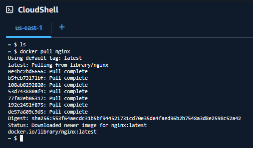
Nota:
Si no especificamos ninguna etiqueta, Docker asume automáticamente latest. Cualquier versión distinta debe indicarse de forma explícita con el formato imagen:tag.
Por ejemplo, si queremos descargar una imagen especifica de nginx, simplemente especificaremos la versión o su nombre.
3.1.4 - Subir la imagen al repositorio
Para ello deberemos consultar los comandos de envío en nuestro repositorio → imágenes → ver comandos de envío.
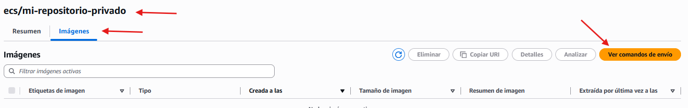
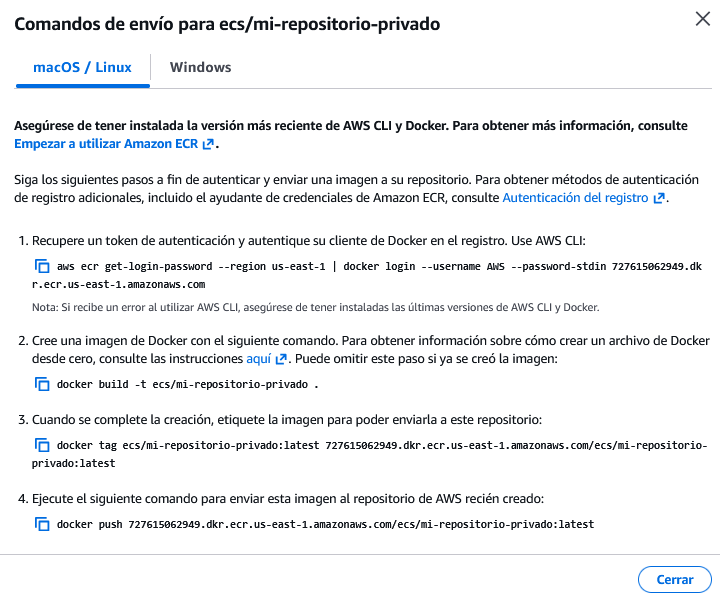
Copiamos la primera línea de comando. Al ejecutar el comando desde la CLI de la interfaz de AWS, no debemos modificar nada.
Al ya disponer de la imagen, tampoco es necesario ejecutar el segundo comando.
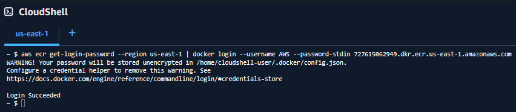
Ejecutamos el comando 3 con el que etiquetaremos la imagen que subiremos al repositorio.
Cambiaremos el nombre de la imagen así como la versión para poder modificarla.
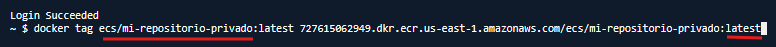
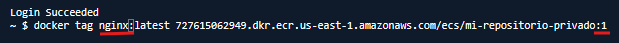
Finalmente, subimos la imagen.
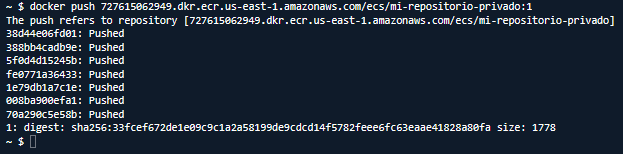
Si todo ha ido bien, la imagen aparecerá disponible en nuestro repositorio.
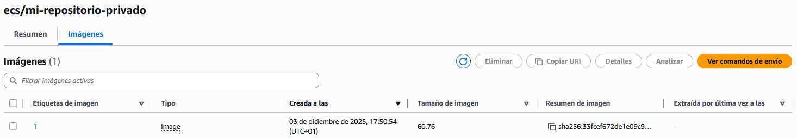
4 - ECS
4.1 - Introducción
Amazon ECS (Elastic Container Service) es el servicio de AWS para ejecutar y orquestar contenedores Docker de forma gestionada.
ECS permite desplegar aplicaciones en contenedores sin necesidad de administrar directamente servidores, encargándose de tareas como el arranque, supervisión, escalado y recuperación de los contenedores.
Las aplicaciones se ejecutan dentro de clusters, utilizando infraestructura EC2 (con mayor control) o Fargate (modelo serverless).
4.2 - Acceder a ECS
Nos dirigimos a ECS pero primero deberemos crear un clúster.
En Amazon ECS (Elastic Container Service), un cluster es el contenedor lógico donde AWS agrupa y gestiona los recursos de cómputo que van a ejecutar contenedores Docker.
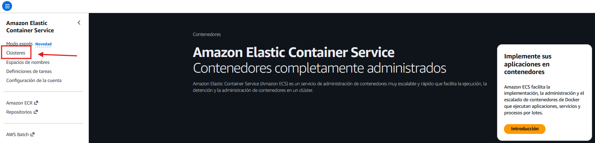
4.3 - Crear un clúster
Creamos nuestro clúster usando la opción Solo Fargate, que suele ser la más flexible para la mayoría de los servicios.
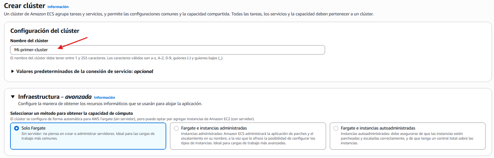
A los pocos instantes tendremos nuestro cluster disponible.
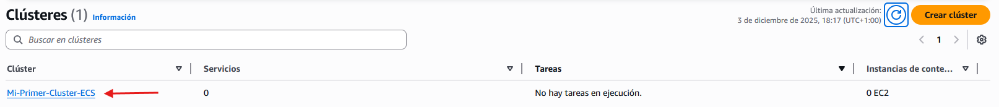
4.4 - Crear una tarea
Una tarea (Task) es la ejecución en tiempo real de una definición de tarea (Task Definition), que actúa como plantilla.
La definición de tarea especifica:
- La imagen del contenedor a ejecutar.
- Los recursos asignados (CPU y memoria).
- Los puertos, variables de entorno y otros parámetros.
Cuando una tarea se lanza:
- Se ejecuta en un clúster ECS.
- Pone en funcionamiento uno o varios contenedores según lo definido.
- Permite ejecutar aplicaciones como microservicios, aplicaciones web o procesos puntuales.
Una tarea puede ejecutarse:
- De forma puntual (por ejemplo, una tarea batch).
- O ser gestionada por un servicio ECS, que se encarga de mantenerla activa y escalada.
Crear una nueva definición de tarea
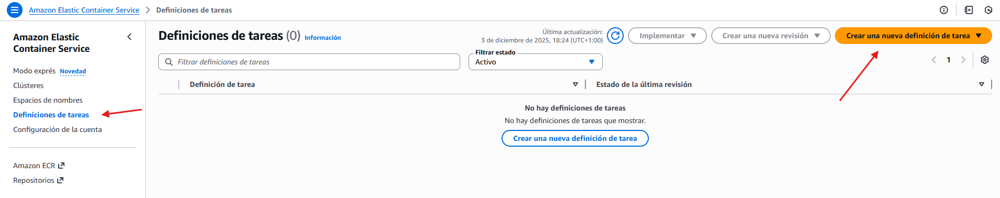
Bajamos:
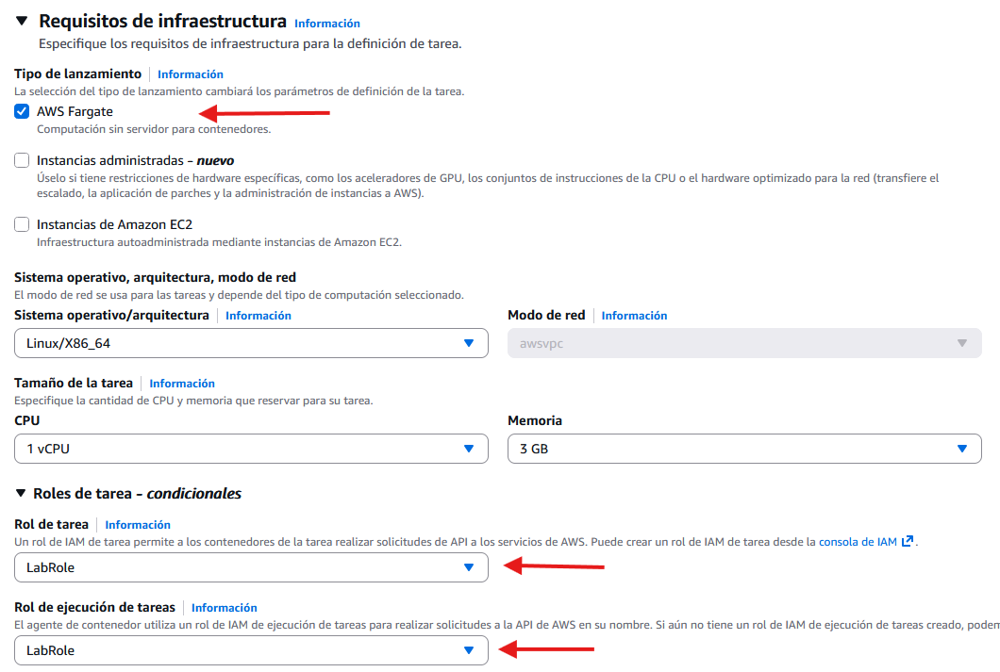
Bajamos: Tendremos que buscar la imagen que hemos subido a nuestro repositorio.
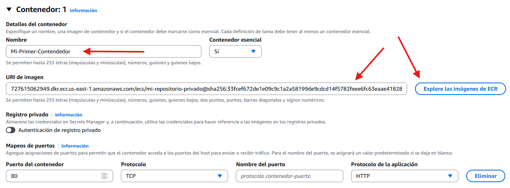
4.5 - Desplegar un servicio nuevo
Para ello creamos un servicio nuevo. Vamos a Clústeres → Servicios → Crear
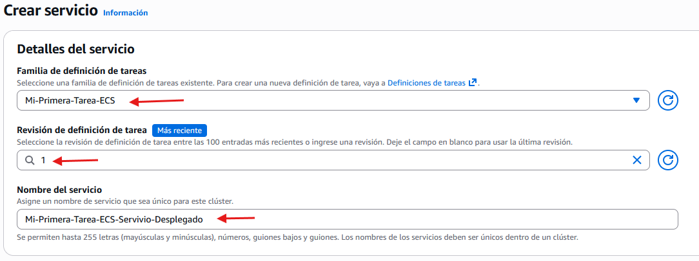
Seleccionamos la VPC sobre la cual se desplegará el servicio.
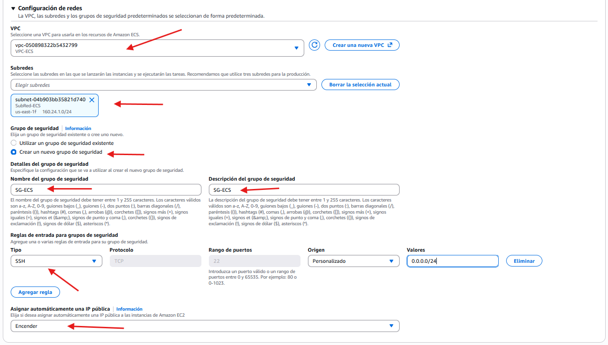
Al cabo de varios minutos ya tendremos nuestro servicio desplegado.
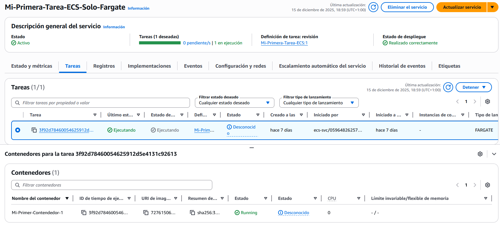
4.6 - Comprobación del grupo de seguridad
Si el servicio se ha levantado correctamente pero no es posible acceder a él, posiblemente hay un problema de configuración del grupo de seguridad de la tarea.
Acceder al grupo de la seguridad de la tarea
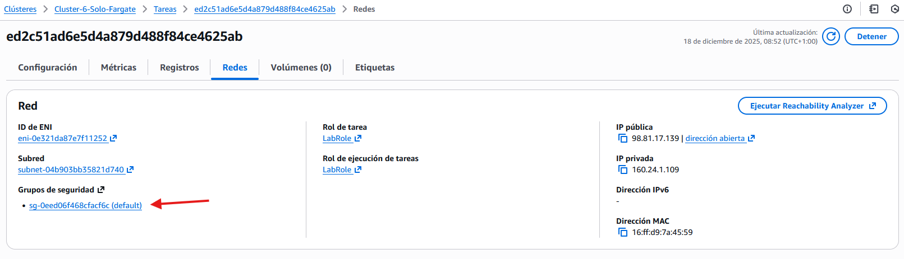
Comprobar que los puertos necesarios al servicio están abiertos
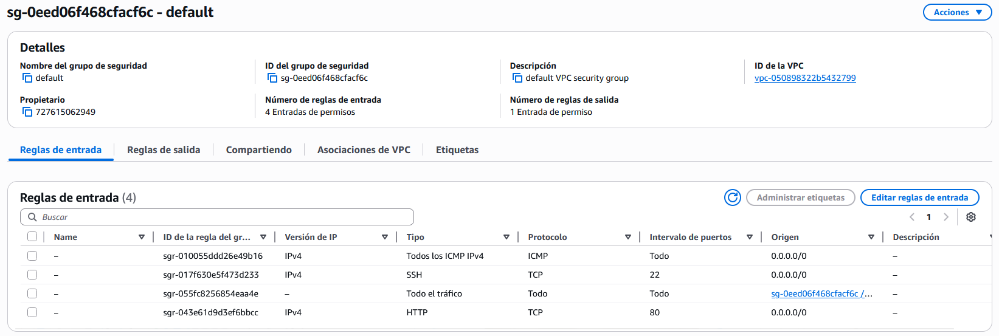
4.7 - Comprobación del servicio
Si vamos a Clústeres → Tareas → Nuestra tarea → Redes podremos acceder al servicio por la IP pública.
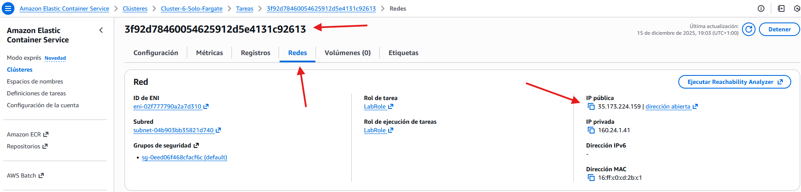
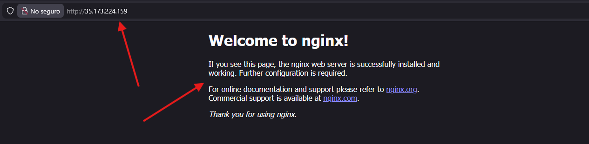
4.8 - Tarea RA4-CEd
Tarea
- Montar el ejemplo anterior.
- Realizar capturas de la imagen subida al repositorio.
- Realizar capturas del cluster y del servicio.
- Realizar capturas del cluster y de la tarea.
- Realizar capturas de los detalles de la tarea.
- Realizar capturas del servicio levantado.
- Adjuntar las capturas a un documento, y comentar brevemente cada captura.
- Subir el documento a AULES en la tarea correspondiente.
4.9 – Creación de una nueva revisión de la definición de tarea
En este apartado se creará una nueva revisión de la definición de tarea, utilizando una versión modificada del contenedor nginx empleado anteriormente.
Para ello, se partirá de un Dockerfile actualizado, se generará una nueva imagen del contenedor y se publicará en el repositorio correspondiente. A continuación, se registrará una nueva revisión de la Task Definition que referencie dicha imagen, la cual podrá utilizarse para lanzar una nueva tarea o actualizar un servicio existente.
4.9.1 - Crear y subir el Dockerfile
Para crear el Dockerfile usaremos un archivo index.html específico y subiremos los archivos a la consola de AWS.
Ejemplo de Dockerfile
Resultado después de subir el Dockerfile y el index.html a AWS
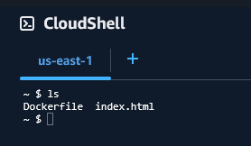
4.9.2 - Subir la imagen a ECR
Obtener un token de autenticación
Para ello vamos ECR → Registro privado → Repositorios → Imágenes → Ver comandos de envío y ejecutamos la primera linea de comando.
Crear la imagen
Ejecutamos la segunda línea de comando.
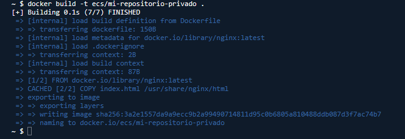
Etiquetar la imagen y subir la imagen al ECR
Cambiamos la etiqueta de la imagen que hemos creado.
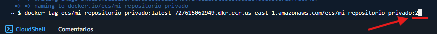
Subimos la imagen a nuestro repositorio.
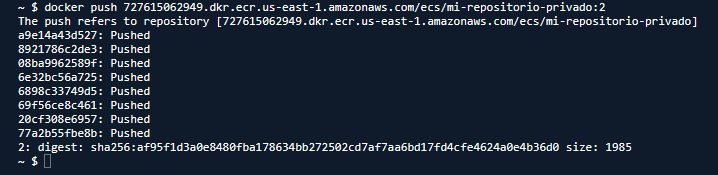
Nota IMPORTANTE
Es posible que no sea posible subir más de una imagen al repositorio por limitaciones del labrole.
Para seguir con la práctica, borrar la imagen anterior.
ECR con la nueva imagen subida.
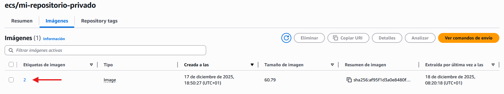
4.9.2 - Crear una revisión de nuestra tarea
Accedemos a ECS → Definiciones de tareas y creamos una nueva revisión de nuestra definición de tarea.
En ECS, cualquier modificación de una definición genera automáticamente una nueva revisión. El servicio no se ve afectado hasta que se actualiza para utilizar dicha revisión.
Una vez actualizamos el servicio, ECS reemplaza progresivamente las tareas que usan la revisión anterior por las nuevas, según la estrategia de despliegue configurada.
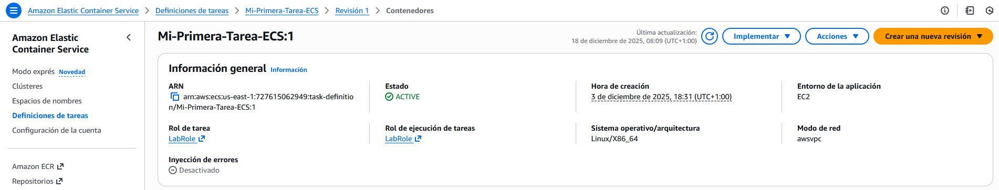
Una vez hemos pinchado en el enlace, revisamos que las opciones son las correctas:
- Tipo de infraestructura (Fargate)
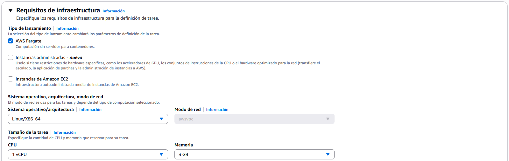
- Imagen utilizada para la revisión
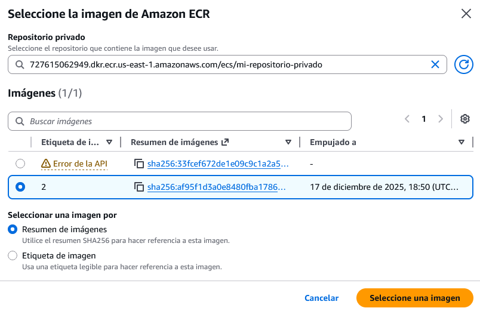
- Revisión creada
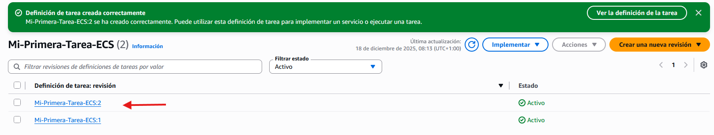
4.9.3 - Actualizar el servicio
- Actualizaremos el servicio para que use la nueva revisión de nuestra tarea.
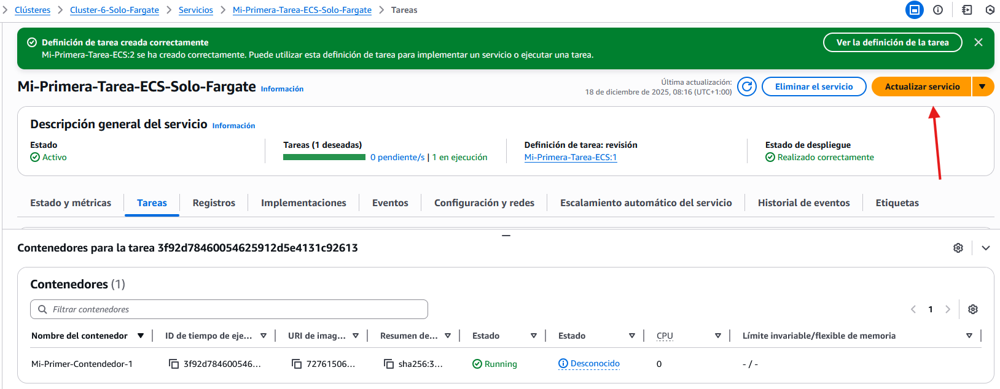
- Seleccionamos la nueva definición de tarea.
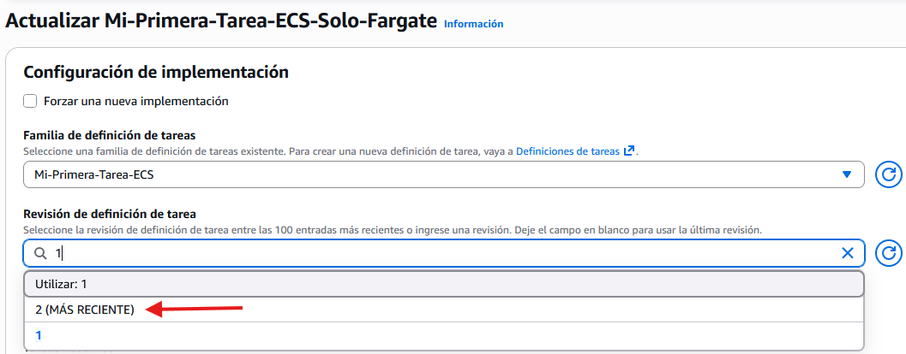
4.9.4 - Comprobar el estado de las tareas
Si vamos a cluster → Tareas veremos como la nueva tarea se va creando y una vez levantada, la anterior tarea se detiene.
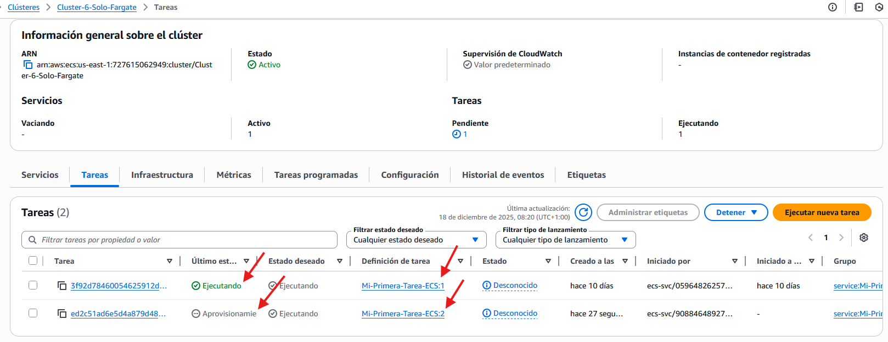
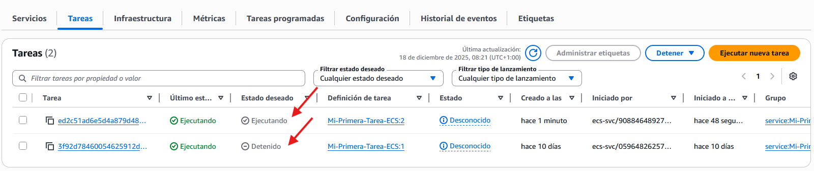
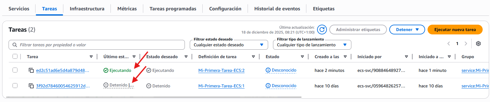
4.9.5 - Estado del servicio
Una vez que el servicion está levantado, vamos Redes, recuperamos la IP del contenedor y comprobamos el resultado.
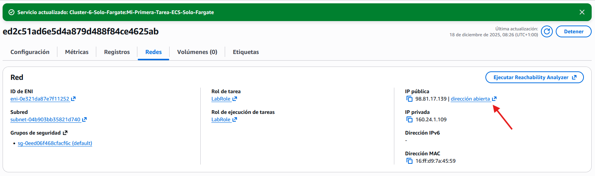
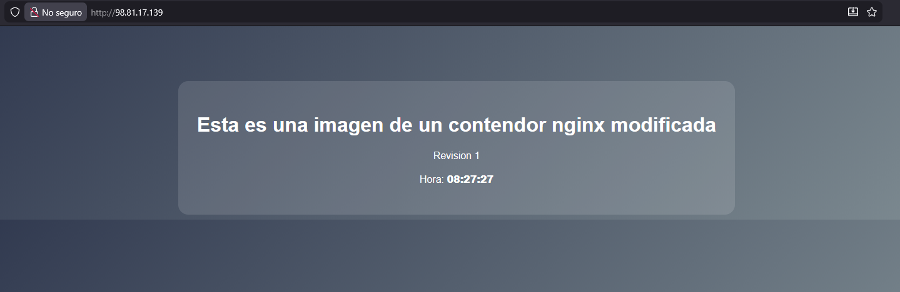
4.9.6 - Registros del contenedor
En la pestaña Registros podremos supervisar todo el tráfico de red desde y hacia nuestro contenedor.
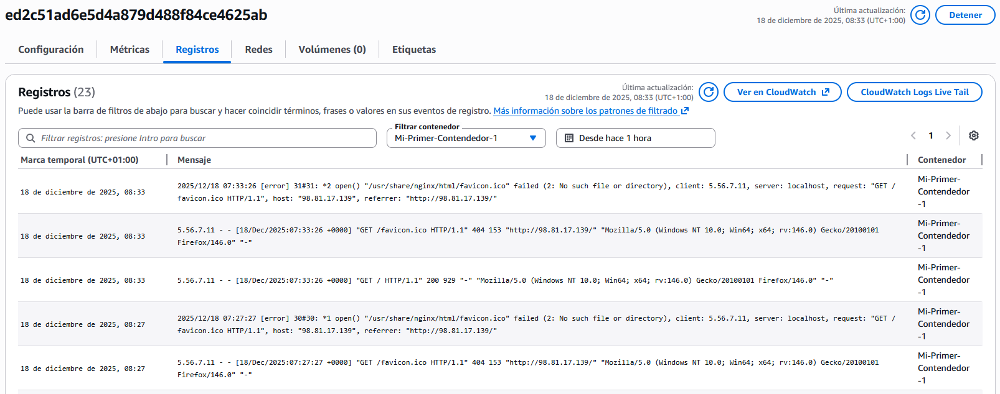
4.9.7 - Pilas
Como podemos ver el despliegue del servicio ha generado una pila (stack) que veremos en el siguiente capítulo.
Una pila de CloudFormation es una unidad lógica de despliegue que agrupa un conjunto de recursos de AWS (EC2, VPC, subredes, IAM, RDS, etc.) que se crean, actualizan y eliminan conjuntamente a partir de una plantilla (template) de CloudFormation.
Dicho de otra manera: una pila es la instanciación de una plantilla de CloudFormation.
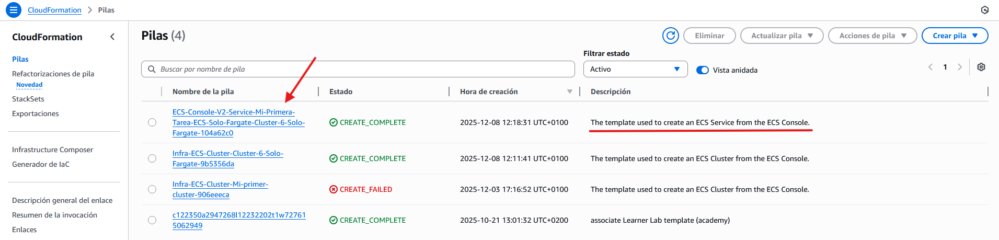
- Si eliminamos la pila, eliminaremos el servicio.
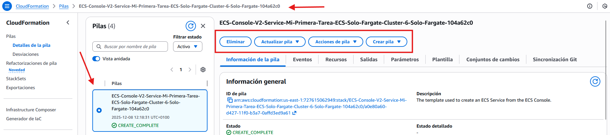
- El archivo de la plantilla con la que se ha creado la pila, puede cargarse y descargarse y tiene 2 formatos: YAML o JSON
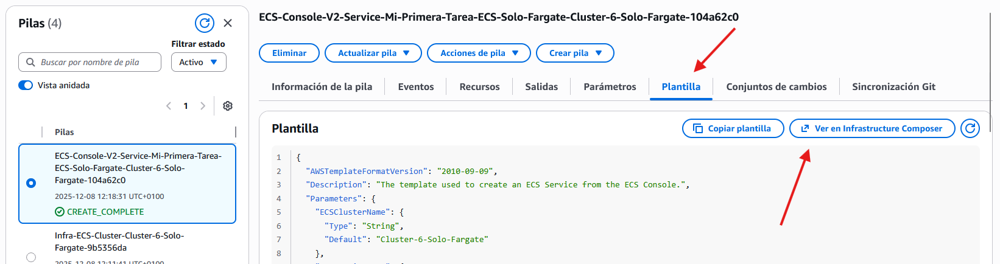
- JSON
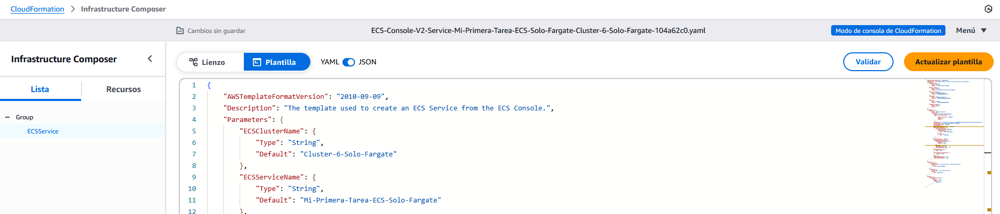
- YAML
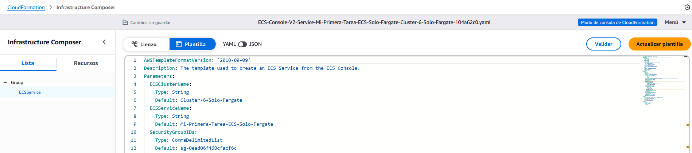
- También se puede crear una plantilla nueva o modificar una existente con Infraestructure Composer
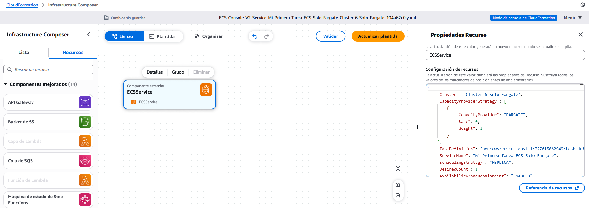
5 - AWS CloudFormation
CloudFormation es un servicio de AWS que permite definir, desplegar y administrar infraestructuras en la nube mediante el enfoque de Infraestructura como Código (IaC). A través de este servicio es posible automatizar la creación y gestión de recursos de AWS utilizando plantillas.
5.1 - Como usar CloudFormation
Para trabajar con CloudFormation es necesario comprender tres conceptos clave:
-
Plantilla (Template):
Es un archivo en formato JSON o YAML en el que se describen los recursos de AWS que se desean crear, así como sus propiedades, configuraciones y relaciones. -
Stack (Pila):
Es la unidad básica de gestión en CloudFormation. A partir de la plantilla, el servicio crea un Stack que agrupa todos los recursos definidos en ella. Al eliminar un Stack, CloudFormation elimina automáticamente todos los recursos asociados, salvo que se haya indicado explícitamente una política de retención. -
Servicio CloudFormation:
Es el encargado de interpretar la plantilla, analizar las dependencias entre los distintos recursos y realizar las llamadas necesarias a las APIs de AWS para crear, actualizar o eliminar la infraestructura de forma ordenada y controlada.
5.2 - Secciones de una plantilla
Una plantilla de CloudFormation está compuesta por secciones bien diferenciadas. Cada una de ellas cumple una función específica dentro del proceso de definición y despliegue de la infraestructura como código (IaC).
-
Resources
Es la sección obligatoria de la plantilla. En ella se definen todos los recursos de AWS que se van a crear, modificar o eliminar durante el despliegue del stack. Cada recurso se identifica mediante un nombre lógico y especifica su tipo (Type) y sus propiedades (Properties). -
Parameters
Permite definir valores de entrada que el usuario puede proporcionar en el momento de crear o actualizar el stack. Los parámetros facilitan la reutilización y flexibilidad de la plantilla, ya que permiten personalizar aspectos como tipos de instancia, rangos de direcciones IP, nombres de recursos o claves SSH sin modificar el código de la plantilla. -
Outputs
Se utiliza para declarar valores de salida que CloudFormation muestra una vez finalizado el despliegue. Estos valores pueden ser, por ejemplo, la dirección IP pública de una instancia o el ID de una VPC. -
Mappings
Contiene tablas de correspondencia estáticas que permiten asociar valores según determinadas claves, como regiones, entornos o tipos de instancia. -
Metadata
Proporciona información adicional sobre la plantilla. -
Rules
Permite definir reglas de validación sobre los parámetros introducidos por el usuario. Estas reglas se evalúan antes de crear o actualizar el stack y permiten asegurar que los valores proporcionados cumplen determinadas condiciones lógicas, evitando errores de configuración. -
Conditions
Se utiliza para definir condiciones lógicas que determinan si ciertos recursos o propiedades deben crearse o aplicarse. Gracias a esta sección, una misma plantilla puede adaptarse a distintos escenarios, como entornos de desarrollo y producción, sin duplicar código. -
Transform
Permite declarar macros o transformaciones que CloudFormation debe aplicar antes de procesar la plantilla. -
Versión del formato
Indica la versión del formato de la plantilla, normalmente mediante la clave AWSTemplateFormatVersion. Aunque actualmente existe una única versión válida, su inclusión es recomendable por motivos de compatibilidad y claridad. -
Description
Es un campo textual opcional. Es muy recomendable, ya que facilita la comprensión, el mantenimiento y la reutilización de la plantilla por otros usuarios o equipos de trabajo.
Ejemplo de plantilla
AWSTemplateFormatVersion: "2010-09-09"
Description: >
Plantilla de ejemplo que despliega una instancia EC2 básica
y muestra su IP pública como salida.
Parameters:
InstanceType:
Type: String
Default: t2.micro
Description: Tipo de instancia EC2
AllowedValues:
- t2.micro
- t2.small
Mappings:
RegionMap:
eu-west-1:
AMI: ami-0a8e758f5e873d1c1
us-east-1:
AMI: ami-0c02fb55956c7d316
Resources:
WebServer:
Type: AWS::EC2::Instance
Properties:
InstanceType: !Ref InstanceType
ImageId: !FindInMap
- RegionMap
- !Ref "AWS::Region"
- AMI
Tags:
- Key: Name
Value: ServidorWebEjemplo
Outputs:
InstanceId:
Description: ID de la instancia EC2
Value: !Ref WebServer
PublicIP:
Description: Dirección IP pública de la instancia
Value: !GetAtt WebServer.PublicIp
{
"AWSTemplateFormatVersion": "2010-09-09",
"Description": "Plantilla de ejemplo que despliega una instancia EC2 básica y muestra su IP pública como salida.",
"Parameters": {
"InstanceType": {
"Type": "String",
"Default": "t2.micro",
"Description": "Tipo de instancia EC2",
"AllowedValues": [
"t2.micro",
"t2.small"
]
}
},
"Mappings": {
"RegionMap": {
"eu-west-1": {
"AMI": "ami-0a8e758f5e873d1c1"
},
"us-east-1": {
"AMI": "ami-0c02fb55956c7d316"
}
}
},
"Resources": {
"WebServer": {
"Type": "AWS::EC2::Instance",
"Properties": {
"InstanceType": {
"Ref": "InstanceType"
},
"ImageId": {
"Fn::FindInMap": [
"RegionMap",
{
"Ref": "AWS::Region"
},
"AMI"
]
},
"Tags": [
{
"Key": "Name",
"Value": "ServidorWebEjemplo"
}
]
}
}
},
"Outputs": {
"InstanceId": {
"Description": "ID de la instancia EC2",
"Value": {
"Ref": "WebServer"
}
},
"PublicIP": {
"Description": "Dirección IP pública de la instancia",
"Value": {
"Fn::GetAtt": [
"WebServer",
"PublicIp"
]
}
}
}
}
5.3 - Ciclo de vida de una pila
Una pila (stack) es un conjunto de recursos que se crean, actualizan y eliminan de forma conjunta a partir de una plantilla. A lo largo de su existencia, una pila pasa por distintas fases:
-
Creación (CREATE) Creación de los recursos definidos en la plantilla, en el orden correcto según las dependencias.
-
Actualización (UPDATE) Permite modificar una pila existente cambiando la plantilla o los parámetros, sin necesidad de recrear todos los recursos desde cero.
-
Eliminación (DELETE) Eliminación de la pila y de todos los recursos creados con ella.
-
Reversión (ROLLBACK) Si ocurre un error durante la creación o actualización, CloudFormation deshace los cambios realizados para evitar configuraciones inconsistentes.
5.4 - Lanzar una pila (stack)
El proceso básico para desplegar una infraestructura con CloudFormation es el siguiente:
-
Acceder a la consola de AWS CloudFormation:
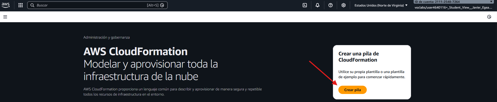
-
Subir la plantilla:
La plantilla puede cargarse directamente desde la consola de CloudFormation o almacenarse previamente en un bucket de Amazon S3.
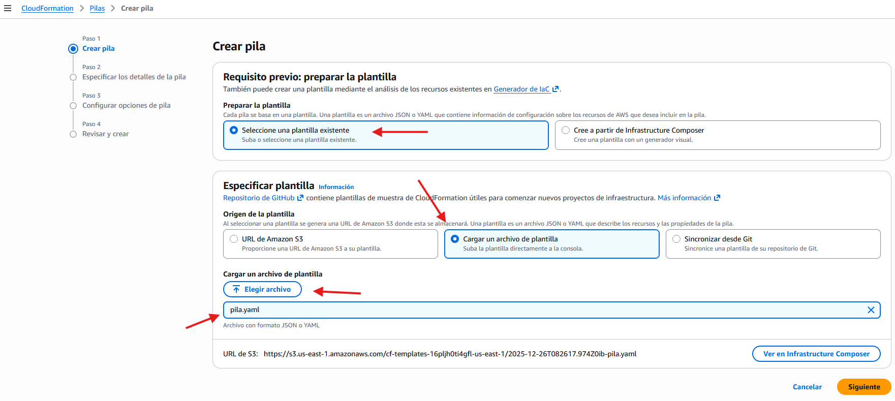
-
Crear la pila stack:
Se asigna un nombre a la pila y se introducen los parámetros necesarios definidos en la plantilla.
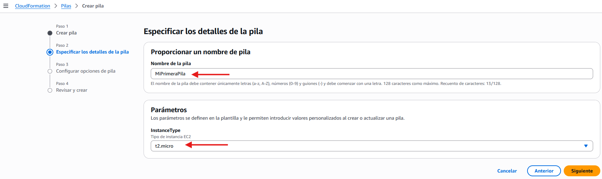
-
Configurar opciones de pila:
En esta etapa se definen opciones de control, seguridad y supervisión de la pila.
-
Revisar y crear:
Revisamos y, si todo está correcto, creamos la pila.
-
Supervisar el despliegue:
Desde la consola se puede seguir el progreso de la creación y ver el estado de cada recurso.
-
Verificar la creación:
Una vez completado el proceso, se revisan los recursos creados y las salidas (Outputs) de la pila.
5.5 - Tarea RA4-CEe: Actualizar una pila
En esta tarea actualizaremos la plantilla anterior con Infraestructure Composer y añadiremos:
- Creación de una VPC + Subred Pública + IGW
- Configuración del grupo de seguridad de la EC2.
- Añadir el par de claves de nuestra cuenta a la EC2.
- Instalación de Nginx en la EC2.
- Configuración de los outputs para visualizar: IP's pública, VPC CIDR...
Importante
- Para editar la plantilla, principalmente, tendremos que ampliar los apartados recursos y parámetros de la misma.
- La documentación referente a lo que debemos hacer se encuentra aquí.
5.5.1 - Edición de la sección 'Recursos/Resources'
Edición de los recursos
La sección Resources contiene el código para la declaración de todos los recursos que formarán parte del stack.
Cada recurso representa un servicio concreto: EC2, VPC, subredes, grupos de seguridad, RDS, IAM, etc.
Es la única sección obligatoria de una plantilla de CloudFormation.
5.5.1.1 - Añadir la VPC
- Accedemos a Infraestructure Composer
- Añadimos la VPC al lienzo:
- Editamos y cambiamos la configuración de las propiedades del recurso:
Esta operación se puede hacer entrando pordetalleso porplantilla.
Detalles:
Plantilla:
Nota:- La Función intrínseca !Ref: conecta el valor que escribió el usuario con la propiedad del recurso.
- Deberemos configurar los valores por defecto dentro del apartado parametros de la plantilla.
5.5.1.2 - Añadir y configurar el IGW
-
Añadimos el IGW al lienzo:
-
Configuración del IGW:
5.5.1.3 - Añadir y configurar el IGW
-
Conectar el IGW a nuestra VPC
-
Configuración:
5.5.1.4 - Añadir subredes públicas y privadas
-
Crear la subredes públicas y privadas
-
Configuración de las subredes
5.5.1.5 - Añadir la tabla de enrutamiento de la subred pública
-
Crear el recurso
-
Asociar el recurso a la VPC
-
Crear las asociaciones a la subred pública
-
Asociar el IGW a la subred pública.
-
Repetiremos lo mismo con la subred privada a diferencia de que no haremos la declaración AWS::EC2::Route al no poder hacer declaración vacías (sin valores).
5.5.1.6 - Añadir Un grupo de seguridad para la instancia EC2
-
Crear el recurso
-
Configurar el recurso
Nota
Tenemos creado el SG pero la asociación con la EC2 se hará desde la misma EC2.
5.5.1.7 - Instancia EC2
- Asociar la instancia EC2 a la subred pública y asociarle el grupo de seguridad anterior.
5.5.1.8 - Lienzo final
- Si todo ha ido bien, este debería ser el aspecto final del lienzo de la plantilla.
5.5.2 - Edición de la sección 'Parámetros/Parameters'
Parámetros de una plantilla
- Los parámetros son variables de entrada definidas en la plantilla que permiten personalizar el despliegue sin modificar el código de la plantilla.
- Permite introducir valores dinámicos en el momento de crear o actualizar una pila (stack), evitando que la plantilla quede acoplada a valores fijos.
Para esta primera modificación, parametrizaremos los rangos CIDR de la VPC así de las subredes asociadas.
5.5.3 - Validar la plantilla
-
Antes de poder seguir deberemos validar la plantilla para asegurarnos de que es coherente.
-
Si la plantilla es válida nos aparecerá lo siguiente:
-
Si hay errores, nos aparecerán en la parte de abajo de la interfaz.
-
Una vez que la plantilla ha sido validada pulsamos actualizar plantilla. En la siguiente pantalla, confirmamos los cambios.
-
Si todo ha ido bien volveremos al paso 1 y le daremos a siguiente.
-
En el paso 2, especificamos los cambios que queremos realizar a nuestro despliegue.
-
En el paso 3, podemos modificar los permisos (opcional).
-
En el paso 4, revisamos los cambios
-
Al final tendremos los cambios subidos al bucket listos para ser ejecutados.
5.5.4 - Ejecutar el conjunto de cambios e iniciar el despliegue
-
Ejecutamos el conjunto de cambios para aplicar las modificaciones definidas en la plantilla sobre la pila existente.
-
Desde la interfaz disponemos de diferentes vistas que permiten supervisar el estado del despliegue.
Errores durante el despliegue
- Que la plantilla sea válida no significa necesariamente que el despliegue se realice correctamente.
- En caso de producirse errores durante el despliegue, CloudFormation realizará automáticamente un rollback, eliminando los recursos creados y devolviendo la infraestructura a su estado anterior.
- Los errores aparecerán en las distintas vistas de supervisión del despliegue y deberán ser analizados y corregidos para completar correctamente el proceso.
5.5.5 - Definir un rol de IAM para la instancia EC2
Actualmente, la EC2 que hemos creado no tiene ningún perfil IAM definido.
Esto implica que las aplicaciones que se ejecuten sobre la instancia no podrán acceder a otros servicios de AWS de forma segura, viéndose obligadas a integrar claves de acceso, lo cual no es una buena práctica.
En esta actividad se definirá y asociará un rol de IAM a la instancia EC2 mediante un Instance Profile:
- Documentación a consultar para crear el recurso de perfil de instancia : AWS::IAM::InstanceProfile.
- Documentación a consultar para asociar ese recurso a una instancia: AWS::EC2::Instance.
5.5.6 - Definir la clave con la que se podrá acceder a la instancia EC2
Del mismo modo que en el punto anterior, actualmente no existe ningún par de claves definido para poder acceder a la instancia mediante SSH.
En esta actividad se definirá y asociará el par de claves a la instancia EC2:
- Documentación a consultar para crear el recurso de par de claves : AWS::EC2::KeyPair.
- Documentación a consultar para asociar ese recurso a una instancia: AWS::EC2::Instance.
5.5.7 - Instalar Nginx sobre la instancia EC2
Para terminar, durante el despliegue de la instancia, también instalaremos el servidor web Nginx.
- Documentación a consultar para añadir esa propiedad a la instancia: AWS::EC2::Instance.
Script a añadir:
5.5.7 - Condiciones de entrega de la tarea RA4-CEe
Condiciones de la entrega
- Adjuntar a la tarea la plantilla final (tarea guiada + rol IAM + Instalación automática de Nginx).
- Realizar capturas de pantalla del mapa de recursos de la VPC desplegada.
- Realizar capturas de pantalla del servidor Nginx desplegado.
- Comentar brevemente cada captura para entender a qué corresponde y subir el documento a la tarea correspondiente de AULES.
5.6 - IaC generator
El IaC Generator en AWS es una funcionalidad de AWS CloudFormation diseñada para generar código de Infraestructura (IaC) a partir de recursos ya existentes.
Su objetivo principal es facilitar la transición desde infraestructuras creadas manualmente hacia un enfoque declarativo y versionable.
Principales limitaciones de IaC generator
- No genera plantillas “perfectas” ni optimizadas
- Puede requerir refactorización manual
- No cubre todos los servicios
- No sustituye el diseño IaC desde cero
5.6.1 - Acceder al servicio IaC generator
Vamos al servicio de CloudFormation, seleccionamos Generador de IaC e iniciamos un análisis de lo recursos de nuestra cuenta.
Una vez que el análisis haya terminado veremos una página similar a la siguiente.
Podremos ver un resumen de los servicios escaneados.
Así como el detalle de los servicios.
5.6.2 - Crear una plantilla con IaC generator
Seleccionamos Crear plantilla y completamos los pasos previos a la creación de la plantilla.
Como podemos ver, hay infinidad de recursos. Tendremos que seleccionarlos uno a uno.
Una vez seleccionados los recursos, nos apareceran los recursos relacionados. Tendremos que seleccionarlos...
Revisamos y creamos la plantilla.
Si salen errores es probable que hayamos seleccionado recursos huérfanos y decir recursos que por si solos no pueden crearse.
Podemos eliminarlos o ampliar los recursos para la creación de la plantilla.
5.6.3 - Explorar la plantilla creada
Una vez creada la plantilla podremos explorarla, modificarla y por supuesto, guardarla.
Nota importante
IaC generator no guarda el contenido de las instancias EC2. Para ello tendremos que crear una AMI a partir de una instancia existente como hemos visto en la UT6.
5.7 - CloudFormation + IaC + CDK

Enlaces de interés
Documentación de AWS
Repositorio privado de Amazon
Amazon Elastic Container Registry Documentation
Documentacion de CloudFormation
¿Qué es AWS CDK?
Fragmentos de plantillas de CloudFormation
Tipos de recursos y propiedades de CloudFormation